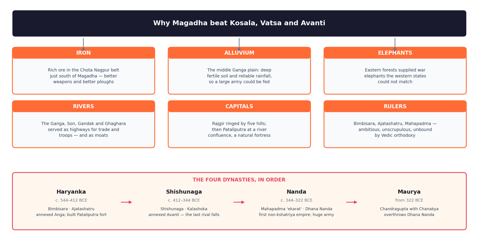

A. From Janapada to Mahajanapada
A janapada was the land where a jana (tribe) had set its foot; a mahajanapada appears when territory matters more than descent.
- Territory over lineage: one belongs to Magadha by living there, not by birth into a clan.
- Fortified capitals: each has a walled pura; ramparts and moats are excavated at Kausambi, Rajgir and Ujjain.
- Assessed taxation: the Vedic bali was a gift; bhaga (customarily one-sixth of produce) is now collected by paid officers — standing armies follow from standing revenue.
- Iron ploughshares and paddy transplantation created the surplus that paid for it — wet rice, not the Rigveda's barley-and-cattle economy.
B. The Sources — and Why the Lists Disagree
| Source | Tradition | What it gives | Why it differs |
|---|---|---|---|
| Anguttara Nikaya | Buddhist, Pali | The standard solasa mahajanapada list, Kasi → Kamboja | Mirrors the Buddha's circuit; the examiners' list |
| Digha Nikaya; Mahavastu | Buddhist | Digha names only 12; Mahavastu keeps 16 | Digha drops Gandhara and Kamboja; Mahavastu swaps in Sibi and Dasarna — the north-west had gone to Persia |
| Bhagavati Sutra | Jain, Prakrit | Its own 16 | Adds Vanga (Bengal), Ladha, Malaya, Malavaka; drops Kuru, Panchala, Gandhara, Kamboja — Jain geography faced east and west, and the text is later |
| Puranas | Brahmanical, later | No fixed 16; janapadas by direction, plus king-lists | Their value is the Magadhan vamsanucharita |
The underlying reason: "sixteen" is a conventional round number, not a census — each tradition listed what mattered to it when its canon closed. The Puranas never use the name "Haryanka" and slot the Pradyotas of Avanti into the Magadhan list, so textbooks date Bimbisara from Buddhist sources and the Shishunaga–Nanda succession from Puranic.
C. The 16 Mahajanapadas — Master Table
| # | Mahajanapada | Capital | Modern location | Form | Distinguishing fact |
|---|---|---|---|---|---|
| 1 | Kasi | Varanasi | UP | Monarchy | Strongest before the Buddha; cotton; taken by Kosala |
| 2 | Kosala | Sravasti | UP | Monarchy | King Prasenajit; Ayodhya and Saketa lay within |
| 3 | Anga 🔶 | Champa | Bihar (Bhagalpur) | Monarchy | River port; King Brahmadatta once beat Magadha |
| 4 | Magadha 🔶 | Rajagriha → Pataliputra | Bihar (Patna, Gaya, Nalanda) | Monarchy | The winner; earlier Jarasandha's Barhadrathas |
| 5 | Vajji 🔶 | Vaishali | Bihar (Vaishali) | Gana-sangha | Clan confederacy of the Licchavis; Mahavira's Jnatrikas joined it |
| 6 | Malla | Kusinara and Pava | Eastern UP | Gana-sangha | The Buddha's mahaparinirvana at Kusinara |
| 7 | Chedi | Sotthivati (Suktimati) | Bundelkhand, MP | Monarchy | Shishupala of the Mahabharata |
| 8 | Vatsa | Kausambi | UP, near Prayagraj | Monarchy | Udayana of Bhasa's Svapnavasavadatta |
| 9 | Kuru | Indraprastha | Delhi–Haryana | Monarchy, later sangha | Kautilya lists it as a rajashabdopajivin sangha |
| 10 | Panchala | Ahichchhatra, Kampilya | UP (Bareilly) | Monarchy, later sangha | Split in two by the Ganga |
| 11 | Matsya | Viratanagara | Rajasthan (Bairat) | Monarchy | Bairat yielded Ashoka's Bhabru inscription |
| 12 | Surasena | Mathura | UP (Mathura) | Monarchy | King Avantiputra; the Greeks' Sourasenoi |
| 13 | Assaka | Potana/Potali | On the Godavari | Monarchy | The only one south of the Vindhyas |
| 14 | Avanti | Ujjaini, Mahishmati | Madhya Pradesh | Monarchy | Chanda Pradyota Mahasena; the last contender to fall |
| 15 | Gandhara | Takshashila | NW Pakistan | Monarchy | Pukkusati sent an embassy to Bimbisara; annexed by Persia |
| 16 | Kamboja | Rajapura | Kashmir–Afghan border | Sangha per Kautilya | Famed for horses; a varta-shastropajivin corporation |

Kasi, Kosala, Anga, Magadha — eastern; the last two are Bihar
Vajji, Malla, Chedi, Vatsa — the first two are the republics
Kuru, Panchala, Matsya, Surasena — the Mahabharata belt
Assaka, Avanti, Gandhara, Kamboja — the outer rim
D. Monarchies and Gana-Sanghas
Most were monarchies. Vajji and Malla were gana-sanghas; Kamboja is a corporate polity in Kautilya, and Kuru and Panchala had drifted to oligarchy by the 4th century BCE. Smaller sanghas lay outside the list — the Shakyas of Kapilavastu, Koliyas and Moriyas.
| Feature | Monarchy (rajya) | Gana-sangha (republic) |
|---|---|---|
| Head | Hereditary raja, consecrated by abhisheka | A ganapramukh chosen from the ruling families |
| Decisions | King with purohita and ministers | Debate in the santhagara, then a vote |
| Revenue | Bhaga assessed, collected by salaried officers | Land held by clan families; revenue shared among the rajas |
| Army | Standing force recruited across castes | Clan levy — the ruling families fight |
| Brahmanas | Sacrifice legitimises the king | Brahmanical authority weak; heterodox sects flourish |
E. Vajji and the Licchavis — How a Republic Governed
| Element | How it worked |
|---|---|
| Composition | Confederacy of clans — Licchavis of Vaishali dominant, with the Videhas of Mithila, the Jnatrikas (Mahavira's clan), Ugras and Bhogas. Tradition calls it the ashtakula, the eight clans. |
| Assembly | The santhagara at Vaishali. Texts speak of 7,707 rajas, each a family head entitled to sit — a figure conveying scale, not a roll. |
| Voting | Members voted with salaka (sticks) counted by a salaka-gahapaka, an ancient teller; the majority carried. |
| Executive | A president with an uparaja, a senapati and a bhandagarika (treasurer). Justice ran through a graded chain of officers, each able to acquit but not convict. |
| The limit | Only heads of ruling kshatriya families voted; dasas, hired labour and women were excluded — an oligarchy of clan elders, not a democracy. |
Why Buddhist texts approve. In the Mahaparinibbana Sutta, Vassakara asks whether Magadha can beat the Vajjis. The Buddha replies with the satta aparihaniya dhamma, seven conditions of non-decline: while the Vajjis hold full and frequent assemblies, meet in concord, neither invent nor abolish law arbitrarily, honour elders and their shrines, they cannot be conquered. The warmth has two causes — the Buddha and Mahavira both came from republican clans, and the sangha copied gana-sangha procedure of quorum, motion and voting by salaka. It is also a warning: Vassakara then sows discord, and Vaishali falls once concord fails.
F. The Contenders and How Magadha Absorbed Each
| Power | Capital | Leading king | How Magadha took it |
|---|---|---|---|
| Kosala | Sravasti | Prasenajit | Bimbisara married Prasenajit's sister Kosala Devi, dowry a Kasi village. After Bimbisara's murder Prasenajit revoked it; the war ended in peace and Vajira's marriage to Ajatashatru. Kosala then collapsed when Virudhaka deposed his father. |
| Vatsa | Kausambi | Udayana | Squeezed between Avanti and Magadha; his marriage to Vasavadatta of Avanti bought time, but Vatsa passed to Avanti and reached Magadha with it |
| Avanti | Ujjaini, Mahishmati | Chanda Pradyota Mahasena | The most serious rival — Ajatashatru fortified Rajgir against it. Annexed by Shishunaga, the act that left Magadha unrivalled |
The pattern: Magadha rarely won in one battle. It used marriage first, subversion second, force last, and could sustain a sixteen-year war no rival could afford.
G. The Haryanka Dynasty (c. 544–412 BCE)
| Ruler | Dates | What he is asked about |
|---|---|---|
| Bimbisara (Shrenika in Jain texts) | c. 544–492 BCE | Real founder of Magadha's power. Three political marriages: Kosala Devi of Kosala, Chellana daughter of the Licchavi chief Chetaka, and Khema of Madra. Annexed Anga — Magadha's first conquest — with Ajatashatru as viceroy at Champa. Credited with a standing army and graded officers (sabbatthaka, vohaarika, senanayaka). Patron of the Buddha, contemporary of Mahavira, starved to death in prison by his son. |
| Ajatashatru (Kunika in Jain texts) | c. 492–460 BCE | Parricide and conqueror. Fought Kosala over the Kasi village, then destroyed the Vajji confederacy in a sixteen-year war — Vassakara's subversion plus the rathamusala (chariot with swinging mace) and mahashilakantaka (stone-throwing catapult), the first named siege engines in Indian history. Fortified Rajgir, built the fort at Patali village, patronised the First Council. |
| Udayin | c. 460–444 BCE | Shifted the capital to Pataliputra at the Ganga–Son confluence — the most quoted fact of the dynasty. |
| Anuruddha, Munda, Naga-Dasak | c. 444–412 BCE | Weak parricides; tradition says the people replaced them with the minister Shishunaga. |
H. Shishunagas and Nandas
| Dynasty | Period | Rulers | Significance |
|---|---|---|---|
| Shishunaga | c. 412–344 BCE | Shishunaga (an amatya), Kalashoka | The annexation of Avanti ended a century of rivalry and left Magadha without a peer; Vatsa fell too. Kalashoka patronised the Second Buddhist Council at Vaishali and restored Pataliputra as capital. |
| Nanda | c. 344–322 BCE | Mahapadma Nanda (Ugrasena in Buddhist tradition) and eight successors ending with Dhana Nanda | The first empire-builders. Puranas call Mahapadma ekarat ("sole sovereign") and sarva-kshatrantaka ("uprooter of all kshatriyas"); he was of low or Shudra birth. Huge standing army, systematic taxation; overthrown by Chandragupta c. 322 BCE. |
- Why they matter: Mahapadma broke the rule that only kshatriyas rule, and uprooting the old lineages removed the intermediate princes — producing the directly administered state Chandragupta inherited.
- Reach into Kalinga: Kharavela's Hathigumpha inscription records a "Nandaraja" who dug a canal and carried off a Jina image — proof that Nanda power touched Odisha.
- Greek testimony: classical writers call Dhana Nanda Agrammes or Xandrames, king of the Prasii (from prachya, easterners) allied to the Gangaridai of the delta. Their army — of the order of 200,000 foot, 20,000 horse, 2,000 chariots and thousands of elephants — is why Alexander's men refused to march east; the figures vary between writers, so quote them as Greek estimates. The same sources call him avaricious and despised, which is the opening Chandragupta used.
I. Why Magadha Won — The Six Reasons
| Factor | The mechanism, and why rivals could not copy it |
|---|---|
| 1. Iron | Ores of south Bihar and the Chota Nagpur belt — Singhbhum–Dhalbhum and Gaya — lay close to Rajgir, supplying weapons and ploughshares. No rival had an ore field next door; how far they were worked is debated, the proximity is not. |
| 2. Fertile alluvium | Heavy monsoon rain on the middle Ganga plain allowed paddy transplantation and two crops — a surplus that fed cities and armies; the upper doab was drier. |
| 3. Elephants | Eastern forests supplied war elephants that broke gates and moved stores through roadless country; Greek writers name the elephants of the Prasii as the deterrent that halted Alexander. |
| 4. The Ganga | Holding the river from Kasi to the delta meant customs revenue, cheap movement of troops and grain, and a wide water barrier. |
| 5. Twin capitals | Rajgir, ringed by five hills with cyclopean walls, was near impossible to storm; Pataliputra, a water-fort (jaladurga) in the angle of Ganga and Son, sat where river traffic had to pass — security while Magadha was weak, reach once it was strong. |
| 6. Rulers and society | Bimbisara, Ajatashatru and Mahapadma made expansion policy. Magadha lay outside the strict Aryavarta of the law-books, so caste bound it loosely: it could crown a non-kshatriya, recruit any birth into the army, and draw on Buddhism, Jainism and the Ajivikas for a new ethic of kingship. |

Fertile alluvium · Iron of Chota Nagpur · Elephants of the forests · Rivers as highway and defence · Capitals, Rajgir the hill-fort and Pataliputra the water-fort · Enterprising, unorthodox rulers.
J. The Second Urbanisation — Cities, Coins and Guilds
The mahajanapadas are the political face of India's second urbanisation (the first being Harappan), from about 600 BCE. The Uttarapatha and Dakshinapatha met in the middle Ganga plain, and the Mahaparinibbana Sutta names six great cities — Champa, Rajagriha, Sravasti, Saketa, Kausambi, Varanasi — the first two in Bihar.
| Marker | What it is | Why it matters |
|---|---|---|
| NBPW | Northern Black Polished Ware, a glossy deluxe tableware, c. 700/600–200 BCE | The type-fossil of the age; its spread maps the urban network. Found at Pataliputra, Rajgir, Vaishali, Chirand and Taradih — a luxury ware implies buyers rich enough to want it. |
| Punch-marked coins | Silver and copper pieces stamped with symbols; the silver karshapana of about 32 rattis | India's earliest coinage: cash lets a state tax, pay soldiers and free trade from barter. Big hoards from Golakhpur, Patna. |
| Shreni | Guild under a shreshthin; the Jatakas name eighteen guilds | Fixed standards, trained apprentices, acted as banks and donors to monasteries — the first corporate bodies in Indian economic life. |
| Gahapati | Head of a landed household — owner of fields, employer, taxpayer | A new type between ruler and labourer; the setthi-gahapati banker was the leading lay patron of the Buddha and Mahavira. |
Two consequences: surplus and coin made a permanent army financeable, so the second urbanisation and Magadha's rise are one story told twice; and the new urban groups held wealth without ritual rank under varna — hence their funding of Buddhism and Jainism.
K. The North-West: Persian and Macedonian Contact
Gandhara and Kamboja never entered the contest: they had already lost their independence to Persia.
| Date | Event | Significance |
|---|---|---|
| c. 558–530 BCE | Cyrus the Great campaigns in the Afghan–Gandhara borderlands | First Persian contact; border tribes submit |
| c. 519–516 BCE | Darius I annexes the Indus region; his Behistun inscription names Gandara, the later Hamadan, Persepolis and Naqsh-i-Rustam lists add Hidush | The earliest datable foreign references to India. Herodotus calls the Indian satrapy the empire's richest, paying 360 talents of gold dust |
| Legacy | Kharoshthi from Aramaic; dipi/lipi in Ashoka's edicts; Persepolitan bell capitals and polish | A transfer that resurfaces under the Mauryas |
| 326 BCE | Alexander crosses the Indus; Ambhi of Takshashila submits; Porus resists at the Hydaspes (Jhelum), is defeated and reinstated | The one large battle, won by cavalry manoeuvre against elephants in monsoon conditions |
| 326 BCE | The army mutinies at the Beas (Hyphasis); Alexander turns back and dies at Babylon in 323 BCE | The eastern limit — he never entered the Ganga valley |
- Why the army refused to cross the Beas: eight years of continuous campaigning; losses at the Hydaspes; monsoon, mud and disease; and reports of the Nanda host of the Prasii and Gangaridai with thousands of elephants beyond the Ganga.
- What it changed: routes opened westward; Arrian, Curtius, Plutarch and Justin gave Indian history its outside evidence; the broken Punjab kingdoms left the vacuum Chandragupta filled. 326 BCE is the first firmly fixed date in Indian history.
- Trap: no Indian text names Alexander — everything comes from Greek and Roman writers.